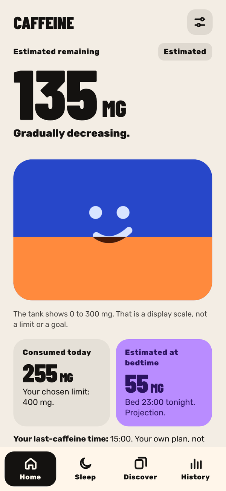
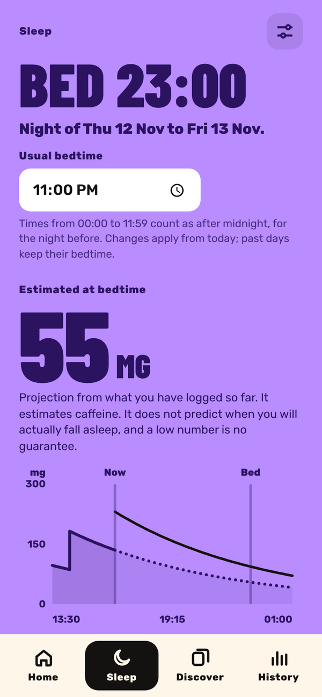
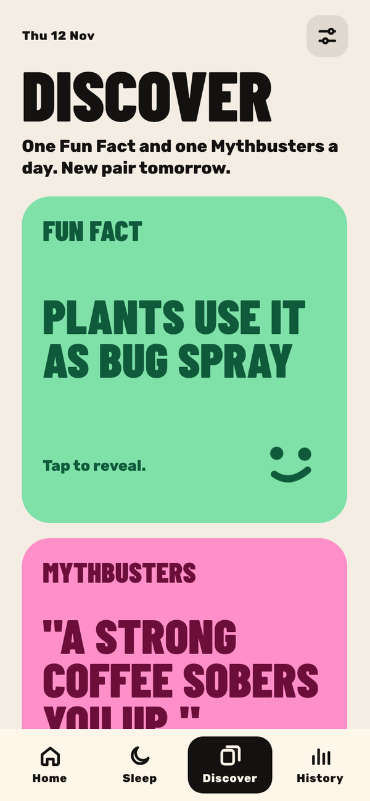
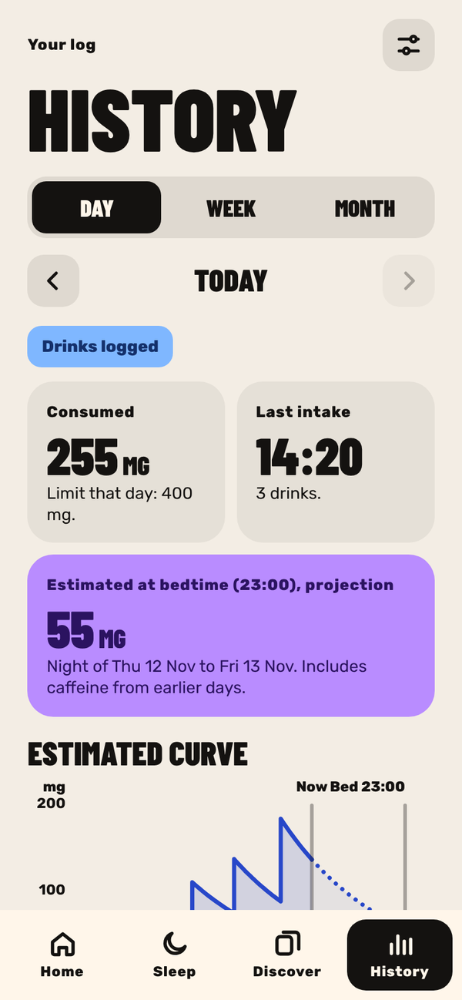
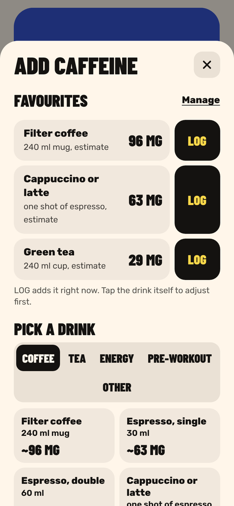

About
Log a coffee, tea or energy drink in one tap and watch the tank slowly empty during the day. It shows an estimate of how much caffeine is still in your system, and whether the next one will keep you up tonight.
Why I made it
I drink a lot of coffee. Like, a lot. At some point I started wondering why I was lying awake at midnight after "just one more" at four o'clock. Caffeine stays in your body for hours, but you can't feel how much is left. So I made a tank that shows it. Not to tell you to stop, just so you know what's going on. The first version said I had more coffee in me than blood. I thought I saw water burning. That's fixed now.
What you can do
-
Log a drink in one tap
Save your usual drinks as favourites and log them with one tap. Forgot one this morning? Add it with the right time, or for an earlier day.
-
Watch the tank empty
Every drink slowly fades out of the tank during the day. One regular coffee fills about a third of it.
-
Ask "what if?"
Thinking about another coffee? See what it would do to your tank tonight, without logging it.
-
Protect your sleep
Set your bedtime, a daily limit and a time after which you'd rather stop. The app gives you a heads-up in the half hour before.
-
A morning recap
The next morning you see how much caffeine was still in you at bedtime, and you can note how you slept.
-
A fun fact and a myth a day
Every day you get one fun fact and one myth about caffeine, each with its sources. Flip them, and save the ones you like.
-
Your week at a glance
The history shows your whole week, so you can see which days got a bit out of hand.
-
Your own backup
Everything stays on your phone. Save a backup file now and then, and put it back whenever you need it.
Screens





Questions
How does it know how much caffeine is left?
It uses the average time your body needs to break caffeine down, about five hours for half of it. Every drink fades on its own and the app adds them up. It's an estimate, not medical advice. Everybody is different.
Can I add my own drinks?
Yes. Log a drink with its own amount of caffeine and save it as a favourite, so next time it's one tap.
Do I get a reminder before my cutoff time?
Yes, on the home screen of the app in the half hour before. Notifications on your phone only work while the app is open or in the background. On iPhone, add it to your home screen first.
Where is my data stored?
Only on your own device. Nothing goes to a server. Safari can clear the data of web apps you haven't opened in a long time, so save a backup file every now and then.
Is it free?
Yes.